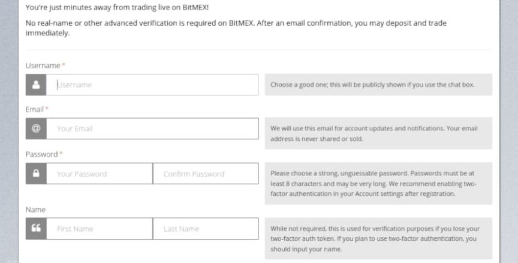
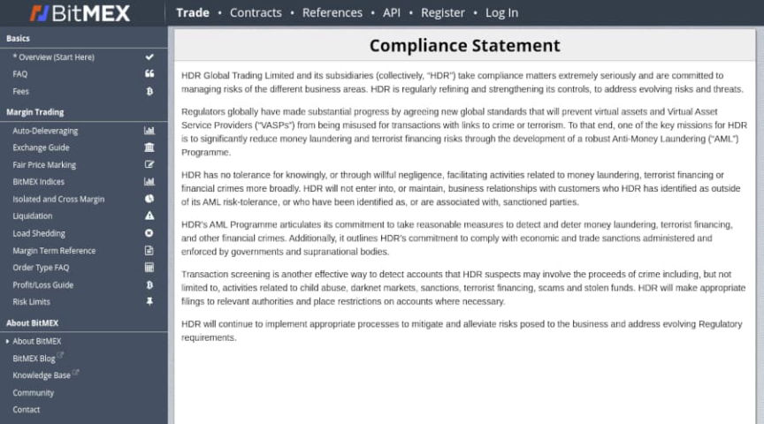
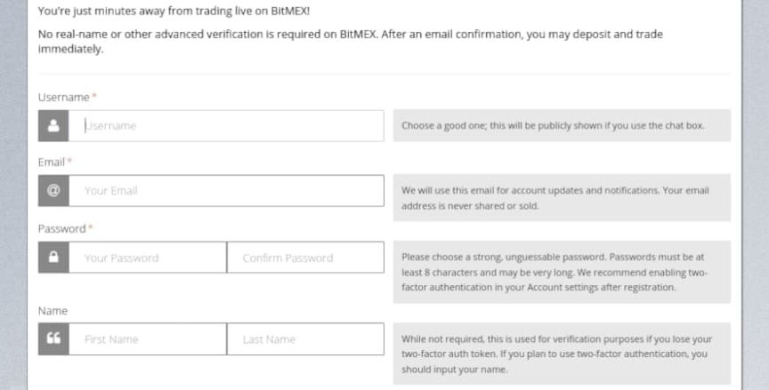
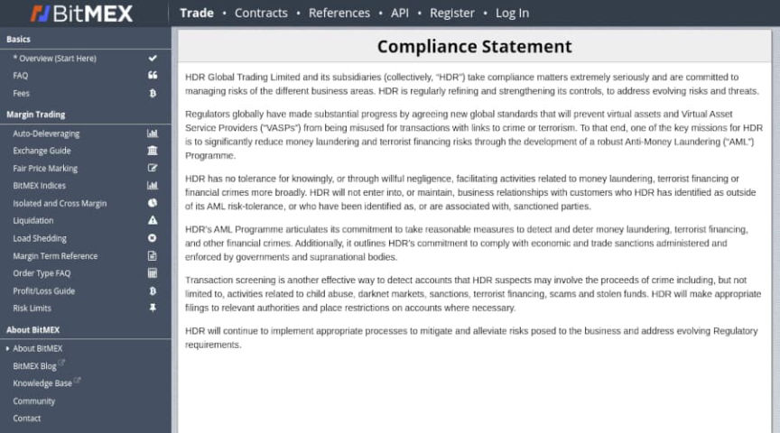

Former BitMEX CEO Sentenced to Probation for AML Violations
~4 min read | Published on 2022-05-21, tagged Cryptocurrency, General-News using 977 words.
The former CEO of BitMEX was sentenced to probation after pleading guilty to violating the Bank Secrecy Act by willfully failing to implement an anti-money laundering program at the exchange.
U.S. District Judge John G. Koeltl sentenced Arthur Hayes, the founder and former CEO of the cryptocurrency exchange BitMEX, to two years of probation at a federal court in New York. Hayes will spend the first six months of the sentence in home detention.

“While building a cryptocurrency platform that profited him millions of dollars, Arthur Hayes willfully defied U.S. law that requires businesses to do their part to help in preventing crime and corruption,” U.S. Attorney Damian Williams said. “He intentionally failed to implement and maintain even basic anti-money laundering policies, which allowed BitMEX to operate as a platform in the shadows of the financial markets.”
In September 2020, the United States government indicted Hayes and two BitMEX co-founders, Benjamin Delo and Sam Reed. On February 24, 2022, Hayes and Delo pleaded guilty to violating the Bank Secrecy Act (the “BSA”) by willfully failing to establish, implement, and maintain an anti-money laundering (“AML”) program at BitMEX. Reed entered a guilty plea in March 2022.

According to the indictment, the co-founders, including Hayes, effectively turned BitMEX into a money-laundering platform. The company never filed a suspicious activity report, as required by law, after identifying a suspected case of money laundering or other criminal activity. In one example provided by prosecutors, government officials had notified Hayes that someone was laundering the proceeds of a cryptocurrency hack through the platform.
Hayes derived substantial profits from BitMEX due to U.S.-based trading and aggressively advertised the company’s lack of an AML or KYC program. At various points in time, BitMEX’s website stated that “No real name or other advanced verification is required on BitMEX.” Through August 2017, the platform’s registration page explicitly stated that first and last names were “not required” to register."
Prosecutors said that BitMEX also functioned as a vehicle for sanctions violations. Hayes and Delo communicated with a BitMEX user based in Iran, a country sanctioned by OFAC.
BitMEX had a legal obligation to institute AML or KYC programs since it allowed U.S.-based users to access the platform. Hayes and Delo withdrew from the U.S. market in September 2015, but the withdrawal was a “sham,” according to an announcement from the Department of Justice. The controls used by BitMEX to block customers in the U.S. were an “ineffective facade,” prosecutors claimed. Hayes and Delo repeatedly stated that BitMEX did not serve customers in the U.S. but derived substantial profits from U.S.-based trading on the platform. Additional evidence supporting the BSA violation charge included BitMEX’s use of U.S.-based cryptocurrency “influencers” for advertisement purposes and television appearances in the U.S. for promotional purposes.

Part of BitMEX’s compliance statement indicates their willingness to screen for transactions involving the proceeds of crime for darknet markets and stolen funds:
Regulators globally have made substantial progress by agreeing new global standards that will prevent virtual assets and Virtual Asset Service Providers (“VASPs”) from being misused for transactions with links to crime or terrorism. To that end, one of the key missions for HDR is to significantly reduce money laundering and terrorist financing risks through the development of a robust Anti-Money Laundering (“AML”) Programme.
HDR has no tolerance for knowingly, or through willful negligence, facilitating activities related to money laundering, terrorist financing or financial crimes more broadly. HDR will not enter into, or maintain, business relationships with customers who HDR has identified as outside of its AML risk-tolerance, or who have been identified as, or are associated with, sanctioned parties.
HDR’s AML Programme articulates its commitment to take reasonable measures to detect and deter money laundering, terrorist financing, and other financial crimes. Additionally, it outlines HDR’s commitment to comply with economic and trade sanctions administered and enforced by governments and supranational bodies.
Transaction screening is another effective way to detect accounts that HDR suspects may involve the proceeds of crime including, but not limited to, activities related to child abuse, darknet markets, sanctions, terrorist financing, scams and stolen funds. HDR will make appropriate filings to relevant authorities and place restrictions on accounts where necessary.
The plea agreement suggested a sentence of six to 12 months in prison. BSA violations carry a maximum penalty of 10 years in prison. However, the Probation Department recommended a probationary sentence instead of incarceration. Although prosecutors rejected the Probation Department’s report, asking the court to sentence Hayes to prison to serve as an example for other “off-shore exchanges,” Koeltl sentenced Hayes to two years of probation. The judge said Hayes should be treated as an individual instead of an example for other exchanges.
Hayes has 30 days to decide where he wants to live for the six-month home detention part of the sentence. His attorney said that Hayes had recently purchased a house in Florida but might prefer to stay somewhere else. After finishing the home detention segment, Hayes will be allowed to leave the country and complete the remainder of the probation sentence from his houses abroad, remotely checking in with his probation officer.
Although the conditions of probation almost always probit the probationer from contacting or associating with other felons, the judge allowed Hayes to remain in contact with the BitMEX co-founders.
Hayes and Delo both agreed to pay a fine of 10 million dollars. Additionally, BitMEX recently accepted a settlement with the Department of Treasury in which BitMEX “neither admitted nor denied that it had conducted more than $200 million in suspicious transactions” and that BitMEX had “failed to file suspicious activity reports on nearly 600 specific suspicious transactions.”
[em]Founder And CEO Of Off-Shore Cryptocurrency Derivatives Platform Sentenced For Violating The Bank Secrecy Act[/em] - justice.gov, archive.is, archive.org
U.S. District Judge John G. Koeltl sentenced Arthur Hayes, the founder and former CEO of the cryptocurrency exchange BitMEX, to two years of probation at a federal court in New York. Hayes will spend the first six months of the sentence in home detention.
Arthur Hayes | Bloomberg
“While building a cryptocurrency platform that profited him millions of dollars, Arthur Hayes willfully defied U.S. law that requires businesses to do their part to help in preventing crime and corruption,” U.S. Attorney Damian Williams said. “He intentionally failed to implement and maintain even basic anti-money laundering policies, which allowed BitMEX to operate as a platform in the shadows of the financial markets.”
In September 2020, the United States government indicted Hayes and two BitMEX co-founders, Benjamin Delo and Sam Reed. On February 24, 2022, Hayes and Delo pleaded guilty to violating the Bank Secrecy Act (the “BSA”) by willfully failing to establish, implement, and maintain an anti-money laundering (“AML”) program at BitMEX. Reed entered a guilty plea in March 2022.

No real-name or other advanced verification is required on BitMEX. After an email confirmation, you may deposit and trade immediately.
According to the indictment, the co-founders, including Hayes, effectively turned BitMEX into a money-laundering platform. The company never filed a suspicious activity report, as required by law, after identifying a suspected case of money laundering or other criminal activity. In one example provided by prosecutors, government officials had notified Hayes that someone was laundering the proceeds of a cryptocurrency hack through the platform.
Hayes derived substantial profits from BitMEX due to U.S.-based trading and aggressively advertised the company’s lack of an AML or KYC program. At various points in time, BitMEX’s website stated that “No real name or other advanced verification is required on BitMEX.” Through August 2017, the platform’s registration page explicitly stated that first and last names were “not required” to register."
Prosecutors said that BitMEX also functioned as a vehicle for sanctions violations. Hayes and Delo communicated with a BitMEX user based in Iran, a country sanctioned by OFAC.
BitMEX had a legal obligation to institute AML or KYC programs since it allowed U.S.-based users to access the platform. Hayes and Delo withdrew from the U.S. market in September 2015, but the withdrawal was a “sham,” according to an announcement from the Department of Justice. The controls used by BitMEX to block customers in the U.S. were an “ineffective facade,” prosecutors claimed. Hayes and Delo repeatedly stated that BitMEX did not serve customers in the U.S. but derived substantial profits from U.S.-based trading on the platform. Additional evidence supporting the BSA violation charge included BitMEX’s use of U.S.-based cryptocurrency “influencers” for advertisement purposes and television appearances in the U.S. for promotional purposes.

BitMEX is owned and operated by HDR Global Trading Limited, a Republic of Seychelles company
Part of BitMEX’s compliance statement indicates their willingness to screen for transactions involving the proceeds of crime for darknet markets and stolen funds:
Regulators globally have made substantial progress by agreeing new global standards that will prevent virtual assets and Virtual Asset Service Providers (“VASPs”) from being misused for transactions with links to crime or terrorism. To that end, one of the key missions for HDR is to significantly reduce money laundering and terrorist financing risks through the development of a robust Anti-Money Laundering (“AML”) Programme.
HDR has no tolerance for knowingly, or through willful negligence, facilitating activities related to money laundering, terrorist financing or financial crimes more broadly. HDR will not enter into, or maintain, business relationships with customers who HDR has identified as outside of its AML risk-tolerance, or who have been identified as, or are associated with, sanctioned parties.
HDR’s AML Programme articulates its commitment to take reasonable measures to detect and deter money laundering, terrorist financing, and other financial crimes. Additionally, it outlines HDR’s commitment to comply with economic and trade sanctions administered and enforced by governments and supranational bodies.
Transaction screening is another effective way to detect accounts that HDR suspects may involve the proceeds of crime including, but not limited to, activities related to child abuse, darknet markets, sanctions, terrorist financing, scams and stolen funds. HDR will make appropriate filings to relevant authorities and place restrictions on accounts where necessary.
The plea agreement suggested a sentence of six to 12 months in prison. BSA violations carry a maximum penalty of 10 years in prison. However, the Probation Department recommended a probationary sentence instead of incarceration. Although prosecutors rejected the Probation Department’s report, asking the court to sentence Hayes to prison to serve as an example for other “off-shore exchanges,” Koeltl sentenced Hayes to two years of probation. The judge said Hayes should be treated as an individual instead of an example for other exchanges.
Hayes has 30 days to decide where he wants to live for the six-month home detention part of the sentence. His attorney said that Hayes had recently purchased a house in Florida but might prefer to stay somewhere else. After finishing the home detention segment, Hayes will be allowed to leave the country and complete the remainder of the probation sentence from his houses abroad, remotely checking in with his probation officer.
Although the conditions of probation almost always probit the probationer from contacting or associating with other felons, the judge allowed Hayes to remain in contact with the BitMEX co-founders.
Hayes and Delo both agreed to pay a fine of 10 million dollars. Additionally, BitMEX recently accepted a settlement with the Department of Treasury in which BitMEX “neither admitted nor denied that it had conducted more than $200 million in suspicious transactions” and that BitMEX had “failed to file suspicious activity reports on nearly 600 specific suspicious transactions.”
[em]Founder And CEO Of Off-Shore Cryptocurrency Derivatives Platform Sentenced For Violating The Bank Secrecy Act[/em] - justice.gov, archive.is, archive.org